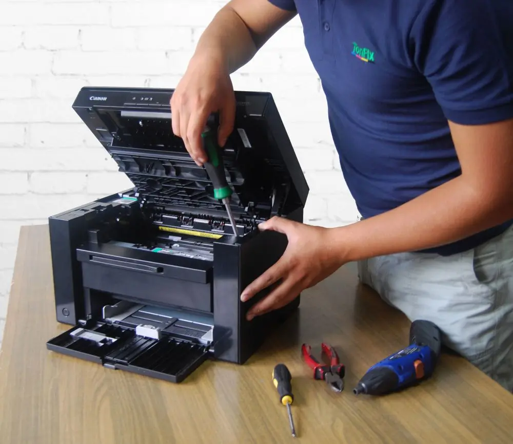
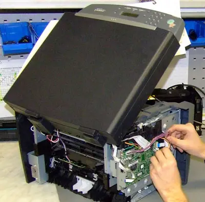

Ремонт принтеров, оргтехники, мфу
Ремонт оргтехники – востребованная услуга, предлагаемая нашей компанией. Опытные специалисты устранят
любые неполадки, выполнят диагностику принтеров, сканеров и прочих устройств.
Когда требуется ремонт оргтехники
- Ремонт принтеров и оргтехники необходим, когда используемые устройства не выполняют вверенные им
функции. Не стоит пытаться починить сложное устройство Ремонт принтеровсамостоятельно, так вы
можете навредить ему еще больше. Желательно сразу обратиться к экспертам, которые сначала
выполнят диагностику принтеров, потом устранят выявленные неисправности.
- Самая распространенная причина поломок – использование низкокачественных расходных материалов.
Специалист, который выполняет обслуживание оргтехники, расскажет, какие виды картриджей следует
использовать, чтобы забыть о проблемах с печатью навсегда.
- Еще одна причина неисправностей – механические повреждения. Иногда во время ремонта офисной
оргтехники требуется замена некоторых деталей. Все запчасти, комплектующие заказываются у
официальных поставщиков. Такой подход гарантирует высокое качество ремонта современных
принтеров.

